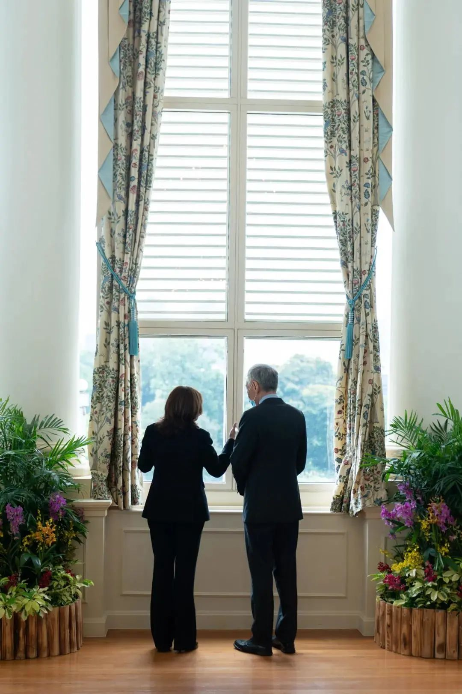

收录于合集

导读 ****
欧亚系统科学研究会： 美国副总统哈里斯三天前结束其东南亚访问行程。与此前特朗普对东南亚的忽视相反，拜登有意修补与东南亚各国的关系， 而后者一方面渴望得到美国的重新关注，另一方面警惕被美国利用 ：显然，美国想把东南亚置于剑指中国的印太战略布局中，而东南亚国家则希望保留和发展原有的包容性多边机制。新加坡总理李显龙去年在《外交事务》发表的长文《濒危的亚洲世纪》清晰表明，东南亚各国不愿在中美之间“选边站”，而是希望与双方都保持良好合作关系。 李显龙“亚洲世纪”濒危论的背后是“霸权和平论”，他将亚洲繁荣归因于二战后美国在该区域的霸权，这种观点事实上是将冷战格局受益者（尤其是亚洲四小龙）的特殊经验视为真理。正因如此，在美国实力消退、中国经济崛起的背景下，东南亚国家的对外政策显得进退失据。 根据新加坡Yusof Ishak机构的一项民调数据，有高达76.3％的受访者认为中国在东南亚的影响力已经超越美国。如何跳出传统的霸权思维来认知这一事实？这恐怕不仅需要中美两方携手合作，东南亚各国也应学会转变观念。本文是新加坡总理李显龙为美国《外交事务》（ FOREIGN AFFAIRS ）杂志撰写的7000多字长文的摘录。原文为英文，由黄金顺翻译，刊于新加坡《联合早报》，文章仅代表作者个人观点。

哈里斯（左）与李显龙总理8月23日在总统府交谈。
来源：哈里斯推特
作品简介 ****
题目： 《濒危的亚洲世纪：美国，中国与对抗的危机》
作者： 李显龙
译者： 黄金顺
来源： Foreign Affairs；欧亚系统科学研究会
正文
“近几年有一种议论，说下个世纪是亚洲太平洋世纪，好像这样的世纪就要到来。我不同意这个看法。”中国领导人邓小平在1988年向来访的印度总理拉吉夫·甘地表达了这一观点。30多年后，邓小平证明了自己的先见之明。
几十年来，亚洲取得了非凡的经济成就，如今是世界上增长最快的区域。在这10年内，亚洲经济体的规模将超越世界其他经济体的总和，这是自19世纪以来从未出现过的情况。然而，即使到今天，邓小平的告诫依然让人警醒：亚洲世纪既非必然实现，也非命中注定。
亚洲之所以繁荣，是因为二战结束以来一直维持着的“美国治下的和平”（Pax Americana）提供了有利的战略环境。然而目前，美中两国的紧张关系引发了有关亚洲未来和新兴国际秩序形态的深刻问题。包括新加坡在内的东南亚国家尤其感到担忧，因为它们被夹在中间或被迫作出令人不快的选择。
亚洲新的格局会带来更多成功，还是会带来危险的不稳定局面？这取决于美国和中国分别和共同作出的选择。这两个大国必须制定出一种共处模式，在一些领域保持竞争关系的同时，不让两国之间的矛盾危害在所有领域的合作。
亚洲国家视美国为在本区域拥有重大利益的常驻大国。与此同时，中国是隔邻的区域大国。亚洲国家不希望被迫在两者之间作出选择。如果美中走上对峙之路，将使长久以来预期会出现的亚洲世纪，岌岌可危。
01
美利坚治世的两个阶段
20世纪亚洲的“美国治下的和平”有两个截然不同的阶段。 第一个是在 1945年到1970年代， 也就是冷战的前几十年，美国及其盟友与苏联集团争夺影响力。尽管中国在朝鲜战争和越南战争期间，同苏联联手对抗美国，但其经济仍然是内向型和封闭的，与其他亚洲国家的经济联系很少。与此同时，亚洲其他地方的自由市场经济体正在腾飞。
美国使亚洲的稳定和繁荣得以实现。 美国倡导建立一个开放、一体化和基于规则的全球秩序，并提供安全保护伞，使区域国家能够在此基础上合作与和平竞争。美国跨国企业在亚洲大量投资，带来了资本、技术和创意。随着华盛顿促进自由贸易和向世界开放美国市场，亚洲与美国的贸易逐渐增长。
1970年代的两件大事将亚洲的“美式和平”带入新阶段：基辛格于1971年秘密访问华，为美中在敌对数十年后，恢复邦交奠定了基础。邓小平于1978年启动“改革开放”，使中国经济起飞。
到1990年代末，经济壁垒逐渐消除，国际贸易迅速增长。长期以来，许多亚洲国家一直把美国和其他发达国家视为主要经济伙伴，但它们也越来越抓紧中国快速发展所带来的机遇，与中国的贸易和旅游业逐年增长，供应链也紧密结合在一起。
在几十年内，中国从在经济上对亚洲其他地区无足轻重的国家，变成本区域最大的经济体和主要的经济伙伴。中国对区域事务的影响力也相应增强。
尽管如此，“美式和平”依然发挥效用，中国地位的这些根本性变化便是在其框架内发生的。 中国没有能力挑战美国的主导地位，也没有试图这样做。中国采纳了邓小平“韬光养晦”的思想，将农业、工业和科技的现代化放在军事力量建设之前。
因此， 东南亚国家在与中国建立经济关系的同时，也与美国和其他发达国家保持着牢固的联系，从而享有两全其美的好处。 它们还加深了彼此之间的联系，并共同努力为植根于亚细安组织（注: 即ASEAN, 东盟）的区域合作建立一个开放式架构。
亚细安在1989年成立亚太经济合作组织、1994年成立亚细安区域论坛，以及2005年以来每年召开东亚峰会等方面，发挥了核心作用。
中国充分参与了这些进程。中国总理每年都会到访一个亚细安成员国，会见亚细安各国领导人，充分阐述中国对东南亚的看法，并提出加强中国与亚细安成员国合作的建议。
随着中国在本地区的利益不断增加，它也推出了自己的倡议，包括“一带一路”和亚洲基础设施投资银行。这些都有助于加深中国与邻国的合作，当然也提高了其影响力。
由于这是一个开放的区域架构，中国并没有绝对的影响力。美国仍然是重要的参与者。 亚细安还与欧盟、印度和许多其他国家建立了对话机制。亚细安认为，这样的联系网络为合作创造了更强有力的框架，并为在国际上推进其成员国的集体利益提供了更多空间。
至今为止，这个做法行之有效。但“美式和平”的战略基础已发生转变。改革开放40年来，中国经历了翻天覆地的变化。随着中国的经济、技术能力和政治影响力成倍增长，它对世界的看法也有所改变。
今天的中国领导人已不再引用邓小平“韬光养晦”箴言。 中国渴望成为一个海洋大国；致力于陆军和海军的现代化，以使将其转变为一支世界级的战斗力量。 中国越来越希望保护和推进其海外利益，并确保其在国际事务中应有的地位，这是完全可以理解的。
与此同时，在许多方面仍然是超级大国的美国，正在重新评估其宏观战略。随着美国在全球GDP所占份额的减少，目前尚不清楚它是会继续承担维护国际和平与稳定的重任，还是会转而采取更狭隘的“美国优先”方式来保护自身利益。此时华盛顿与北京的关系也受到了越来越多关注。
02
美中面临的重大抉择
美中各自面临重大抉择。 美国必须决定，是将中国的崛起视为一种生存威胁，并试图以一切可能的手段遏制中国，或是承认中国是一个大国。如果选择后者，美国就必须制订与中国打交道的方法，尽可能促进合作和良性竞争，而不让竞争伤害整体关系。 理想情况是，竞争将在商定的多边框架内进行，采用类似联合国和世贸组织所遵循的规则和准则。
美国可能会发现这是一个痛苦的调整 ，尤其华盛顿有越来越多人认为，与北京的接触已经失败，有必要采取更强硬的手段来维护其利益。但无论这项任务对美国来说有多艰巨， 在现有的国际规则和规范体系内，尽最大努力满足中国的抱负还是值得的。 这一体系规定了所有国家的责任和限制，并为合作和竞争创造更安全、更稳定的环境。
如果美国选择遏制中国的崛起，就有可能引发反弹，使两国走上长达数十年的对峙之路。 美国不是一个衰落的大国。另一方面，中国经济拥有巨大的活力和日益先进的技术。这两个大国之间的任何对峙，都不太可能像冷战时那样，在一个国家和平崩溃的情况下结束。
就中国而言，它必须决定是否要成为一个不受制约的大国，为所欲为，凭借其绝对的影响力和经济实力取胜，但要冒着遭到美国和其他国家强烈抵制的风险。
又或者，中国可以承认自己不再积贫积弱，并接受世界目前对它抱有的更高期望。 一个更大更强的中国，不仅应该尊重全球规则和规范，也应该承担起更大的责任，维护和更新中国取得如此辉煌成就的国际秩序。 如果现有规则和规范不再适用，中国应与美国和其他国家合作，制定出所有国家都能接受的订正安排。
在当前的美国总统竞选活动中，外交政策并没有得到太多关注，即使有，其焦点也是“美国优先”这一主题的不同版本论述。在中国，领导层的首要任务是确保国内政治稳定，并在经历了近两个世纪的软弱和屈辱之后，再次展现出一个古老文明正在崛起的雄心。
我们不能想当然地认为，美中会根据对国家利益的理性考量来处理双边关系，甚至拥有互利共赢的共同愿望。 两国不一定会走上对峙的道路，但也不能排除发生冲突的可能。
03
亚太区域的势力变化
美国在本区域一直拥有至关重要的国家利益。为了在太平洋战争中打败日本，美国消耗了大量资源，也付出了惨痛代价，并险些失去三位“未来的总统”。
美国慷慨、开放的政策极大造福了亚太区域，这些政策源于根深蒂固的政治理想，及其作为“山巅之城”和“光照诸国”的自我形象，也反映了明智的自身利益考量。一个稳定而繁荣的亚太区域，首先是冷战堡垒，然后是一个有许多对美友好国家组成的重要地区。这里为美国提供了巨大的市场和重要的生产基地。美国在亚太也拥有最坚定的盟友和伙伴。
中国在本区域也有重大利益。东南亚是中国能源和原材料的来源地、经济合作伙伴，以及重要的海上交通线。为了保护能源安全，它也将马六甲海峡和南中国海视为必须保持开放的咽喉要道。中国也将亚太区域视为近邻，因此对其自身安全至关重要。
中国说，太平洋足够大，容得下中美两国。也说，亚洲的安全归根结底要靠亚洲人民来维护。这就产生一个问题：是太平洋足够大，可以让美中两国和平共处，有重叠的朋友圈呢？还是它足够大，两国可以将之一分为二，形成敌对的势力范围？
新加坡 和其他亚太国家会倾向哪种解读，是不言自明的。尽管它们可能对事态发展没有太大的影响力，但还是热切 希望不要被迫在美中之间作选择。
新加坡和其他亚洲国家都希望与中国建立良好关系。 它们希望得到这样一个大国的善意和支持，并参与其发展。从飞机、手机到手术口罩，全球供应链将中国和其他亚洲国家紧密联系在一起。中国的庞大规模使其成为大多数亚洲国家的最大贸易伙伴。
美国几乎不可能取代中国，成为世界最大的供应国，就像美国自己没有中国市场是不可想象的一样。 中国是美国商品的第三大进口国，仅次于加拿大和墨西哥。
中国也无法取代美国在亚洲的经济地位。全球金融体系主要依赖于美国金融机构，人民币近期内不太可能取代美元成为世界储备货币。 尽管亚洲国家对中国的出口超过对美国的出口，但美国跨国公司仍是包括新加坡在内的许多亚太国家最大的外国投资来源。中国公司已开始在海外投资，但它还需要很多年，才能拥有与美国同样规模和水平的跨国公司。
基于这些原因，亚太国家不希望被迫在美中之间作出选择。 它们希望与双方培养良好关系。它们承受不起疏远中国的代价。它们将尽最大努力，不让任何单一争端主导它们与北京的整体关系。
与此同时，亚洲国家视美国为本区域拥有重大利益的常驻大国。无论奥巴马的亚太“再平衡”，还是特朗普提出的印太战略，并宣布加强美军的印太司令部，亚洲国家大体上支持并感到欣慰。
亚洲国家也意识到，美国是一个全球超级大国，在世界各地都有广泛的当务之急和优先事项。 它们的态度是务实的，不把美国的支持当作是理所当然的。它们准备尽自己的一份力量去捍卫自己的国家利益。它们还希望美国明白，如果它们促进与中国的关系，并不一定意味着它们在与美国作对。
当然，亚洲国家加强与美国的关系时，它们也同样希望得到中国的理解。
04
建立包容性的区域架构
美中并不是唯一在本区域具有影响力的主要国家。比如日本也做出了比以往更积极的贡献。包括在美国退出TPP后，日本挺身而出，推动其余11个成员国完成CPTPP。该协定汇集了太平洋两岸的发达国家和发展中国家，是亚太区域朝自由贸易迈出的一步。
印度也有巨大潜在影响力。印度是最初谈判组建RCEP的国家之一。RCEP旨在整合亚太区域所有主要经济体，类似于北美自由贸易协定。经过广泛磋商，印度去年决定不加入RCEP，这令RCEP不免打了折扣。
大多数亚洲国家都认识到，此类协定的价值超出它们所带来的经济收益。这些平台使亚太国家能够相互合作，在彼此的成功中受益，并共同塑造区域架构和管理该架构的规则。这种区域安排必须是开放和包容的。它们不应有意无意地把任何一方拒之门外，破坏现有的合作安排，制造对立集团，或迫使各国选边站。
这也是 亚太国家支持日本、美国及其他国家提出“印太”构想，以及中国提出“一带一路”倡议 的出发点。许多亚洲国家认为，支持“一带一路”倡议，是适应中国在本区域日益增长的影响力的建设性方式。如果实施得当，该倡议可加强区域和多边合作，解决许多发展中国家改善基础设施和互联互通的迫切需要。
发展新的区域安排，并不意味着放弃或忽视现有的多边机构。这些来之不易的多边安排和机构继续为所有国家，特别是较小的国家提供一个促进集体利益的框架。 但是，许多现有的多边机构迫切须要改革，一些机构已不再有效。这是所有国家的损失，我们应该为改革这些组织开展建设性工作，而不是削弱它们或绕过它们。
05
这个时代的根本问题
美中两国作出的战略选择，将塑造新兴全球秩序的格局。 大国竞争在所难免。但它们的合作能力才是对治国之道的真正考验， 它将决定人类在气候变化、核扩散和传染病传播等全球问题上能否取得进展。
冠病疫情清楚地提醒我们，各国携手合作是多么重要。疾病不受国界限制，我们迫切需要国际合作来控制这场流行病，并减少对全球经济的损害。即使美中关系大好，对冠病采取集体应对措施，都将是一个巨大的挑战。不幸的是，冠病疫情正在加剧美中对抗。如果疫情成为美国总统选举中的一个主要议题，情况肯定会恶化。
与此同时，亚洲国家正忙得不可开交。而亚洲世纪的实现，在很大程度上将取决于美中两国能否战胜分歧，建立互信，为维护稳定与和平的国际秩序作出建设性努力。这是我们这个时代面临的一个根本问题。
编辑 | 黄晨蕊
本文来自欧亚系统科学研究会新设新媒体专栏，文章观点不代表本平台观点。